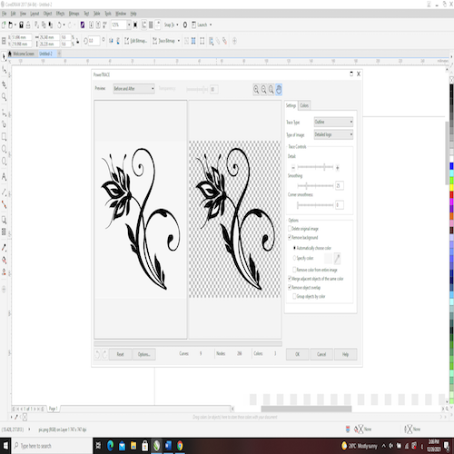
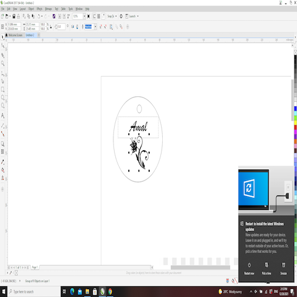
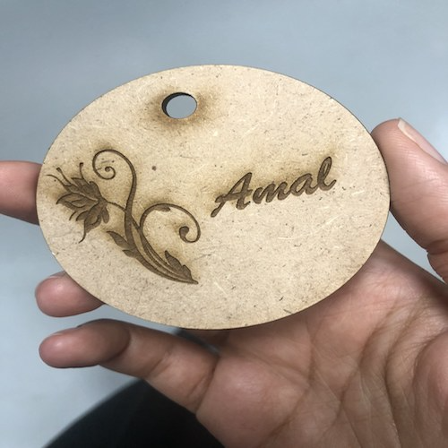

Goal: Take a brief introduction to laser cutting and apply this to create a simple keychain.
1- Design a keychain using CorelDraw software
2- Printing the keychain using MDF wood and Universal Laser System interface
1- Draw a small circle inside a bigger one using CorelDraw. Also, insert a simple black-and-white design
from the internet as a picture in PNG format and write your name inside the big circle.
2- Right-click on the uploaded picture, then choose Power trace and Detailed logo. Wait for a few seconds to allow this process to complete to have a detailed picture.
3- Press Enter to delete the background from the detailed picture.
4- Select the circles, one at a time, the picture and the written name, then right-click on the red color that is shown in the color sidebar to change their outer borders to red.
This will allow the laser cutter, later on, to cut these borders, while the black color will be engraved.
5- Save this file to a USB, then use the computer next to the Universal Laser System to set the printing setting for the used material.
6- After the printing process is done, allow the printer to cool down for a few minutes before removing the printed piece.
